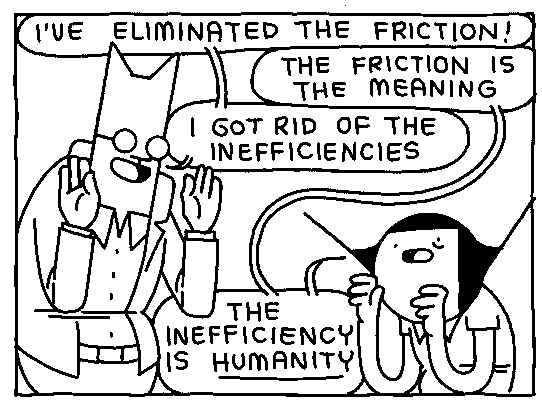
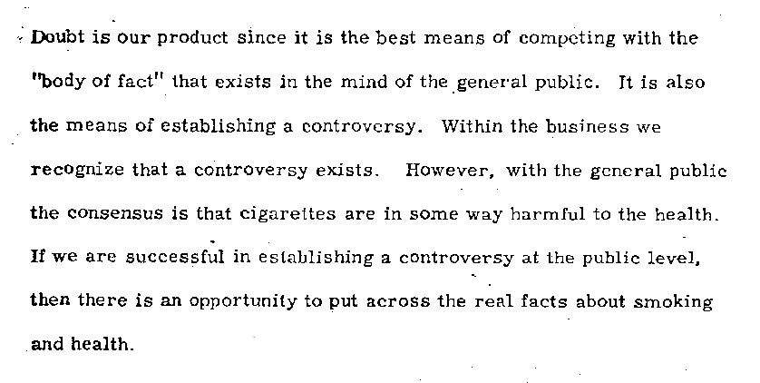

Advertising shits in your head.
Modernity attempts to degrade our ability to pay attention. It seeks to have
us believe that we can have everything at a moment's notice, without thought
for payment, patience or production. If one does not pay for something they
will not value it. If one does not work at something they will not empathize
with it. And if one does not produce something they will not understand it.
Modernity removes each and every single one of these factors by way of credit,
addictive mechanisms and consumerism. ~
The concept of liminality for thinking about modern societies is connected to the study of theatre and performance. The liminal
experiences of tribal cultures – in which ritual is a collective process for
navigating moments of change – are different from the liminoid
experiences available in modern societies, which resemble the liminal, but are
choices we opt into as individuals, like a night out at the theatre. ~

When finished objects become commodities and break, they are easily replaced.
When you break a chair, you buy another chair. We know well how to make one
thousand chairs. But when a unique object breaks, we might mend. To learn the skill of mending is to
also gain the skill of building, to understand the very urge to build. If we
never mend, we not only risk building less but building in perverse ways.
To mend is to comprehend a human scale problem, and without this
understanding our creations become strange creatures. The more finished goods
become commodities, the fewer opportunities an individual has to generate new
creation. The ability to mass-produce removes the opportunity for the great
many to learn to produce at all.
This curious world we inhabit is more wonderful than convenient, more
beautiful than it is useful, it is more to be admired and enjoyed than
used.
Henry David Thoreau
In the 1976 film Network, a newsreader about to lose his job threatens to
kill himself on live TV. Ratings skyrocket, he gets his own talk show as a
pundit, and his catchphrase “I'm mad as hell and I'm not gonna take this
anymore!” goes viral.
Premium mediocre
Premium mediocre is food that Instagrams better than it tastes.
Mediocre with just an irrelevant touch of premium, not enough to ruin the
delicious essential mediocrity.
Venkatesh Rao
Sous-produit de la circulation des marchandises, la circulation humaine
considérée comme une consommation, le tourisme, se ramène fondamentalement
au loisir d'aller voir ce qui est devenu banal. Cette société qui supprime la
distance géographique recueille intérieurement la distance.
People who have traveled through Glacier Park in an airconditioned motor
home, listening to soft background music and having a cup of coffee, would
probably answer affirmatively and without qualification when asked if they knew
the park, had been in the park, or had been through the park.
Such people have
not felt the wind of the mountains, have not smelled the pines, have not heard
the red-tailed hawk, have not sensed the slopes in their legs and lungs, have
not experienced the cycle of day and night in the wilderness. The experience
has not been richer than one gained from a well-made film viewed in suburban
Chicago.
Albert Borgmann, Technology and the Character of Contemporary Life
One Human Minute
The Guinness Book was a best seller because it presented nothing but
exceptional things, with a guarantee of authenticity. This panopticon of
records had, however, a serious drawback: it was soon obsolete. No sooner had
some fellow eaten forty pounds of peaches complete with pits than another not
only ate more, but died immediately after from a volvulus, which gave the new
record a dismal piquancy.
While it is untrue that there is no such thing as mental illness, that it was
invented by psychiatrists to torment their patients and squeeze money out of
them, it is true that normal people do far madder things than the insane. The
difference is that the madman does what he does disinterestedly, whereas the
normal person does it for fame, because fame can be converted into cash. Of
course, some are satisfied with fame alone, so the matter is unclear. In any
case, the still-surviving subspecies of intellectuals scorned this whole
collection of records, and in polite society it was no distinction to remember
how many miles someone on all fours could push a nutmeg with his nose painted
lavender.
Cultural works, unlike software, are a consumer good, not a tool for use in
production, or a producer's good. Producer's goods are the assets used in
production, such as the tools and equipment required to produce consumer goods
sold for profit. Capital demand is distinct from consumer demand. Capital
demand is the demand for producer's goods; consumer demand is the demand for
consumer goods.
The Pursuit of Excellence
Activities such as reading the newspaper or engaging in conversations can
advance one's world citizenship, but they may also be done merely for
diversion. Some of the categories, however, are more central to the traditional
kinds of excellence and may provide benchmarks.

World citizenship surely benefits from attending programs in political or
union training to which on the average less than a minute per day is devoted.
Less than half a minute is spent on attending special lectures, less than a
minute on scientific reading, and about five minutes on reading books.
Gallantry is served through active sports, which take up six minutes, and
through outdoor activities, such as hiking, on which two minutes are spent.
Musicianship is most directly making music to which one minute is given.
Artwork takes less than half a minute, as do visits to museums. Half a minute
is devoted to theater performances and concerts. Records are played for one
minute. An indication of charity is volunteer work on which between one and two
minutes are spent.
However much we as a society may admire excellence, we are certainly not
devoted to its pursuit. All the activities which have been taken as suggesting
a dedication to excellence constitute when taken together less than a quarter
of the time spent on watching television.

Capitalism doesn't require that a profit be made on the production of capital goods because profits are made through the control of the circulation of consumer goods. Anything that decreases the cost of capital consequently increases the potential profit that can be captured through the sale of the goods.
Failure to understand the difference between capital demand and consumer demand propagates the myth that the success of free software can be a template for free culture. Under capitalism, only capital can be free. That's why software can be free, but culture cannot be free without more fundamental shifts in society.
In the end, the market proved both views right braindance became an everyday product, another form of entertainment, but also a new form of surveillance.
incoming varvara devlog sabotage marvelous pursuit solarpunk permacomputing technology moloch simulacra collapse